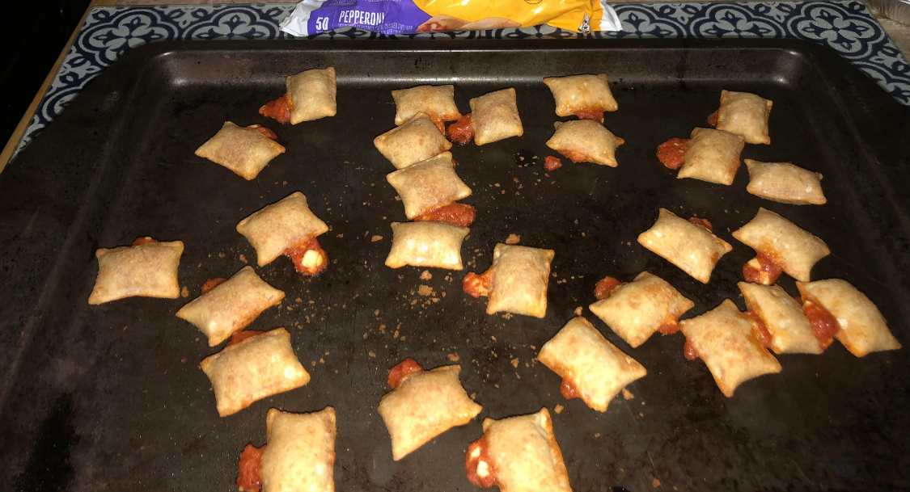

Mac and Cheese

You know that classics are classics for a reason. Totino’s® Pepperoni Pizza Rolls® turn a classic pizza topping into a tasty poppable bite.
Ingredients
- Totino’s® Pizza Rolls® bag
Directions
- Heat oven to 425°F.
- Place rolls in single layer on baking sheet or toaster oven tray.
- Bake according to chart.
- Let stand 2 minutes to complete cooking. Filling will be very hot. Be cautious on first bite.
Quantity = 20 Rolls®; Time = 10-12 minutes
Quantity = 40 Rolls®; Time = 13-15 minutes
Return to Homepage